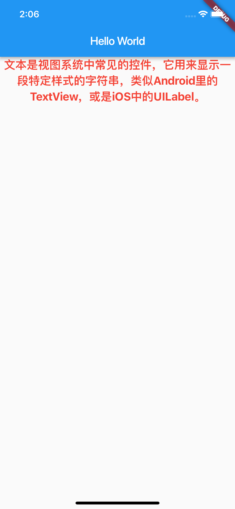
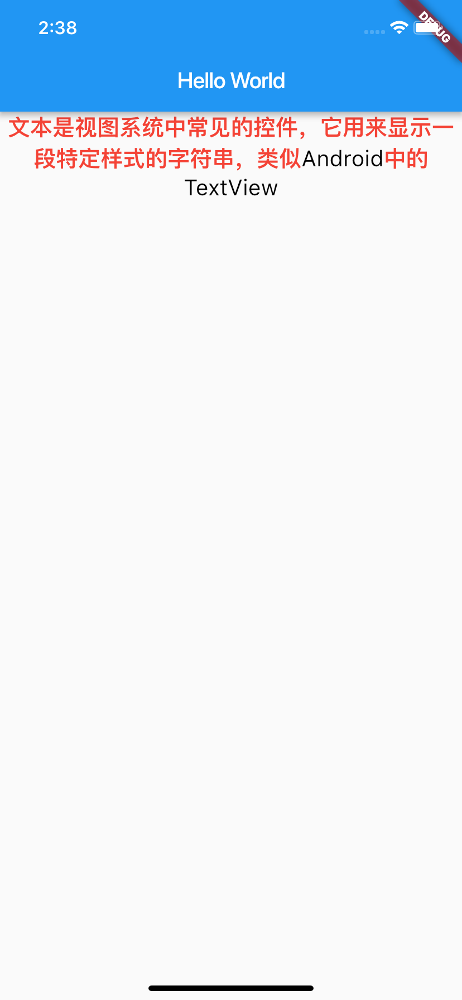
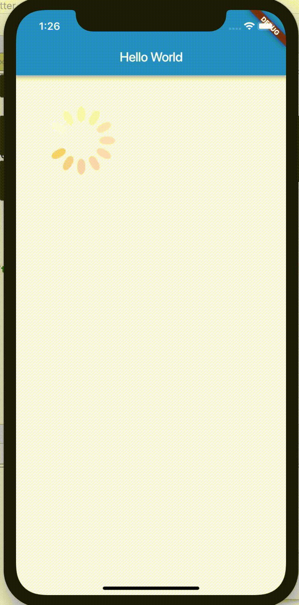
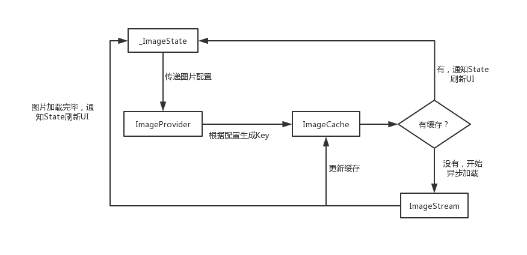
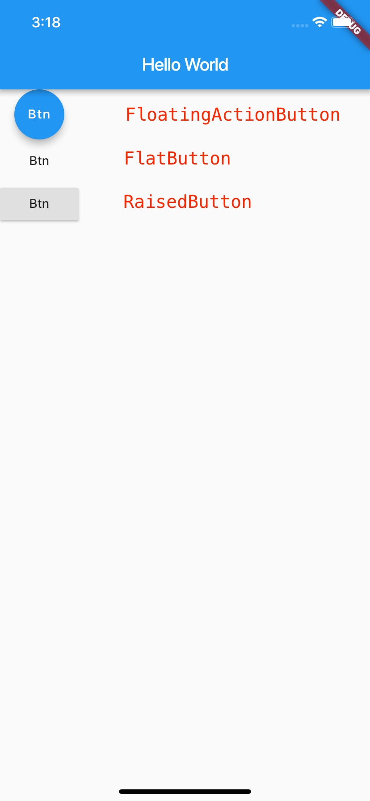

- 00 开篇词 为什么每一位大前端从业者都应该学习Flutter？.md.html
- 01 预习篇 · 从0开始搭建Flutter工程环境.md.html
- 02 预习篇 · Dart语言概览.md.html
- 03 深入理解跨平台方案的历史发展逻辑.md.html
- 04 Flutter区别于其他方案的关键技术是什么？.md.html
- 05 从标准模板入手，体会Flutter代码是如何运行在原生系统上的.md.html
- 06 基础语法与类型变量：Dart是如何表示信息的？.md.html
- 07 函数、类与运算符：Dart是如何处理信息的？.md.html
- 08 综合案例：掌握Dart核心特性.md.html
- 09 Widget，构建Flutter界面的基石.md.html
- 10 Widget中的State到底是什么？.md.html
- 11 提到生命周期，我们是在说什么？.md.html
- 12 经典控件（一）：文本、图片和按钮在Flutter中怎么用？.md.html
- 13 经典控件（二）：UITableView_ListView在Flutter中是什么？.md.html
- 14 经典布局：如何定义子控件在父容器中排版的位置？.md.html
- 15 组合与自绘，我该选用何种方式自定义Widget？.md.html
- 16 从夜间模式说起，如何定制不同风格的App主题？.md.html
- 17 依赖管理（一）：图片、配置和字体在Flutter中怎么用？.md.html
- 18 依赖管理（二）：第三方组件库在Flutter中要如何管理？.md.html
- 19 用户交互事件该如何响应？.md.html
- 20 关于跨组件传递数据，你只需要记住这三招.md.html
- 21 路由与导航，Flutter是这样实现页面切换的.md.html
- 22 如何构造炫酷的动画效果？.md.html
- 23 单线程模型怎么保证UI运行流畅？.md.html
- 24 HTTP网络编程与JSON解析.md.html
- 25 本地存储与数据库的使用和优化.md.html
- 26 如何在Dart层兼容Android_iOS平台特定实现？（一）.md.html
- 27 如何在Dart层兼容Android_iOS平台特定实现？（二）.md.html
- 28 如何在原生应用中混编Flutter工程？.md.html
- 29 混合开发，该用何种方案管理导航栈？.md.html
- 30 为什么需要做状态管理，怎么做？.md.html
- 31 如何实现原生推送能力？.md.html
- 32 适配国际化，除了多语言我们还需要注意什么_.md.html
- 33 如何适配不同分辨率的手机屏幕？.md.html
- 34 如何理解Flutter的编译模式？.md.html
- 35 Hot Reload是怎么做到的？.md.html
- 36 如何通过工具链优化开发调试效率？.md.html
- 37 如何检测并优化Flutter App的整体性能表现？.md.html
- 38 如何通过自动化测试提高交付质量？.md.html
- 39 线上出现问题，该如何做好异常捕获与信息采集？.md.html
- 40 衡量Flutter App线上质量，我们需要关注这三个指标.md.html
- 41 组件化和平台化，该如何组织合理稳定的Flutter工程结构？.md.html
- 42 如何构建高效的Flutter App打包发布环境？.md.html
- 43 如何构建自己的Flutter混合开发框架（一）？.md.html
- 44 如何构建自己的Flutter混合开发框架（二）？.md.html
- 特别放送 温故而知新，与你说说专栏的那些思考题.md.html
- 结束语 勿畏难，勿轻略.md.html
- 捐赠
12 经典控件（一）：文本、图片和按钮在Flutter中怎么用？
你好，我是陈航。
在上一篇文章中，我与你介绍了Widget生命周期的实际承载者State，并详细介绍了初始化、状态更新与控件销毁，这3个不同阶段所涉及的关键方法调用顺序。深入理解视图从加载到构建再到销毁的过程，可以帮助你理解如何根据视图的状态在合适的时机做恰当的事情。
前面几次分享我们讲了很多关于Flutter框架视图渲染的基础知识和原理。但有些同学可能会觉得这些基础知识和原理在实践中并不常用，所以在学习时会选择忽视这些内容。
但其实，像视图数据流转机制、底层渲染方案、视图更新策略等知识，都是构成一个UI框架的根本，看似枯燥，却往往具有最长久的生命力。新框架每年层出不穷，可是扒下那层炫酷的“外衣”，里面其实还是那些最基础的知识和原理。
因此，只有把这些最基础的知识弄明白了，修炼好了内功，才能触类旁通，由点及面形成自己的知识体系，也能够在框架之上思考应用层构建视图实现的合理性。
在对视图的基础知识有了整体印象后，我们再来学习Flutter视图系统所提供的UI控件，就会事半功倍了。而作为一个UI框架，与Android、iOS和React类似的，Flutter自然也提供了很多UI控件。而文本、图片和按钮则是这些不同的UI框架中构建视图都要用到的三个最基本的控件。因此，在今天这篇文章中，我就与你一起学习在Flutter中该如何使用它们。
文本控件
文本是视图系统中的常见控件，用来显示一段特定样式的字符串，就比如Android里的TextView、iOS中的UILabel。而在Flutter中，文本展示是通过Text控件实现的。
Text支持两种类型的文本展示，一个是默认的展示单一样式的文本Text，另一个是支持多种混合样式的富文本Text.rich。
我们先来看看如何使用单一样式的文本Text。
单一样式文本Text的初始化，是要传入需要展示的字符串。而这个字符串的具体展示效果，受构造函数中的其他参数控制。这些参数大致可以分为两类：
- 控制整体文本布局的参数，如文本对齐方式textAlign、文本排版方向textDirection，文本显示最大行数maxLines、文本截断规则overflow等等，这些都是构造函数中的参数；
- 控制文本展示样式的参数，如字体名称fontFamily、字体大小fontSize、文本颜色color、文本阴影shadows等等，这些参数被统一封装到了构造函数中的参数style中。
接下来，我们以一个具体的例子来看看Text控件的使用方法。如下所示，我在代码中定义了一段居中布局、20号红色粗体展示样式的字符串：
Text(
'文本是视图系统中的常见控件，用来显示一段特定样式的字符串，就比如Android里的TextView，或是iOS中的UILabel。',
textAlign: TextAlign.center,//居中显示
style: TextStyle(fontWeight: FontWeight.bold, fontSize: 20, color: Colors.red),//20号红色粗体展示
);
运行效果如下图所示：

图1 单一样式文本Text示例
理解了展示单一样式的文本Text的使用方法后，我们再来看看如何在一段字符串中支持多种混合展示样式。
混合展示样式与单一样式的关键区别在于分片，即如何把一段字符串分为几个片段来管理，给每个片段单独设置样式。面对这样的需求，在Android中，我们使用SpannableString来实现；在iOS中，我们使用NSAttributedString来实现；而在Flutter中也有类似的概念，即TextSpan。
TextSpan定义了一个字符串片段该如何控制其展示样式，而将这些有着独立展示样式的字符串组装在一起，则可以支持混合样式的富文本展示。
如下方代码所示，我们分别定义了黑色与红色两种展示样式，随后把一段字符串分成了4个片段，并设置了不同的展示样式：
TextStyle blackStyle = TextStyle(fontWeight: FontWeight.normal, fontSize: 20, color: Colors.black); //黑色样式
TextStyle redStyle = TextStyle(fontWeight: FontWeight.bold, fontSize: 20, color: Colors.red); //红色样式
Text.rich(
TextSpan(
children: <TextSpan>[
TextSpan(text:'文本是视图系统中常见的控件，它用来显示一段特定样式的字符串，类似', style: redStyle), //第1个片段，红色样式
TextSpan(text:'Android', style: blackStyle), //第1个片段，黑色样式
TextSpan(text:'中的', style:redStyle), //第1个片段，红色样式
TextSpan(text:'TextView', style: blackStyle) //第1个片段，黑色样式
]),
textAlign: TextAlign.center,
);
运行效果，如下图所示：

图2 混合样式富文本Text.rich示例
接下来，我们再看看Flutter中的图片控件Image。
图片
使用Image，可以让我们向用户展示一张图片。图片的显示方式有很多，比如资源图片、网络图片、文件图片等，图片格式也各不相同，因此在Flutter中也有多种方式，用来加载不同形式、支持不同格式的图片：
- 加载本地资源图片，如Image.asset(‘images/logo.png’)；
- 加载本地（File文件）图片，如Image.file(new File(’/storage/xxx/xxx/test.jpg’))；
- 加载网络图片，如Image.network(
'http://xxx/xxx/test.gif') 。
除了可以根据图片的显示方式设置不同的图片源之外，图片的构造方法还提供了填充模式fit、拉伸模式centerSlice、重复模式repeat等属性，可以针对图片与目标区域的宽高比差异制定排版模式。
这，和Android中ImageView、iOS里的UIImageView的属性都是类似的。因此，我在这里就不再过多展开了。你可以参考官方文档中的Image的构造函数部分，去查看Image控件的具体使用方法。
关于图片展示，我还要和你分享下Flutter中的FadeInImage控件。在加载网络图片的时候，为了提升用户的等待体验，我们往往会加入占位图、加载动画等元素，但是默认的Image.network构造方法并不支持这些高级功能，这时候FadeInImage控件就派上用场了。
FadeInImage控件提供了图片占位的功能，并且支持在图片加载完成时淡入淡出的视觉效果。此外，由于Image支持gif格式，我们甚至还可以将一些炫酷的加载动画作为占位图。
下述代码展示了这样的场景。我们在加载大图片时，将一张loading的gif作为占位图展示给用户：
FadeInImage.assetNetwork(
placeholder: 'assets/loading.gif', //gif占位
image: 'https://xxx/xxx/xxx.jpg',
fit: BoxFit.cover, //图片拉伸模式
width: 200,
height: 200,
)

图3 FadeInImage占位图
Image控件需要根据图片资源异步加载的情况，决定自身的显示效果，因此是一个StatefulWidget。图片加载过程由ImageProvider触发，而ImageProvider表示异步获取图片数据的操作，可以从资源、文件和网络等不同的渠道获取图片。
首先，ImageProvider根据_ImageState中传递的图片配置生成对应的图片缓存key；然后，去ImageCache中查找是否有对应的图片缓存，如果有，则通知_ImageState刷新UI；如果没有，则启动ImageStream开始异步加载，加载完毕后，更新缓存；最后，通知_ImageState刷新UI。
图片展示的流程，可以用以下流程图表示：

图4 图片加载流程
值得注意的是，ImageCache使用LRU（Least Recently Used，最近最少使用）算法进行缓存更新策略，并且默认最多存储 1000张图片，最大缓存限制为100MB，当限定的空间已存满数据时，把最久没有被访问到的图片清除。图片缓存只会在运行期间生效，也就是只缓存在内存中。如果想要支持缓存到文件系统，可以使用第三方的CachedNetworkImage控件。
CachedNetworkImage的使用方法与Image类似，除了支持图片缓存外，还提供了比FadeInImage更为强大的加载过程占位与加载错误占位，可以支持比用图片占位更灵活的自定义控件占位。
在下面的代码中，我们在加载图片时，不仅给用户展示了作为占位的转圈loading，还提供了一个错误图兜底，以备图片加载出错：
CachedNetworkImage(
imageUrl: "http://xxx/xxx/jpg",
placeholder: (context, url) => CircularProgressIndicator(),
errorWidget: (context, url, error) => Icon(Icons.error),
)
最后，我们再来看看Flutter中的按钮控件。
按钮
通过按钮，我们可以响应用户的交互事件。Flutter提供了三个基本的按钮控件，即FloatingActionButton、FlatButton和RaisedButton。
- FloatingActionButton：一个圆形的按钮，一般出现在屏幕内容的前面，用来处理界面中最常用、最基础的用户动作。在之前的第5篇文章“从标准模板入手，体会Flutter代码是如何运行在原生系统上的”中，计数器示例的“+”悬浮按钮就是一个FloatingActionButton。
- RaisedButton：凸起的按钮，默认带有灰色背景，被点击后灰色背景会加深。
- FlatButton：扁平化的按钮，默认透明背景，被点击后会呈现灰色背景。
这三个按钮控件的使用方法类似，唯一的区别只是默认样式不同而已。
下述代码中，我分别定义了FloatingActionButton、FlatButton与RaisedButton，它们的功能完全一样，在点击时打印一段文字：
FloatingActionButton(onPressed: () => print('FloatingActionButton pressed'),child: Text('Btn'),);
FlatButton(onPressed: () => print('FlatButton pressed'),child: Text('Btn'),);
RaisedButton(onPressed: () => print('RaisedButton pressed'),child: Text('Btn'),);

图5 按钮控件
既然是按钮，因此除了控制基本样式之外，还需要响应用户点击行为。这就对应着按钮控件中的两个最重要的参数了：
- onPressed参数用于设置点击回调，告诉Flutter在按钮被点击时通知我们。如果onPressed参数为空，则按钮会处于禁用状态，不响应用户点击。
- child参数用于设置按钮的内容，告诉Flutter控件应该长成什么样，也就是控制着按钮控件的基本样式。child可以接收任意的Widget，比如我们在上面的例子中传入的Text，除此之外我们还可以传入Image等控件。
虽然我们可以通过child参数来控制按钮控件的基本样式，但是系统默认的样式还是太单调了。因此通常情况下，我们还是会进行控件样式定制。
与Text控件类似，按钮控件也提供了丰富的样式定制功能，比如背景颜色color、按钮形状shape、主题颜色colorBrightness，等等。
接下来，我就以FlatButton为例，与你介绍按钮的样式定制：
FlatButton(
color: Colors.yellow, //设置背景色为黄色
shape:BeveledRectangleBorder(borderRadius: BorderRadius.circular(20.0)), //设置斜角矩形边框
colorBrightness: Brightness.light, //确保文字按钮为深色
onPressed: () => print('FlatButton pressed'),
child: Row(children: <Widget>[Icon(Icons.add), Text("Add")],)
)；
可以看到，我们将一个加号Icon与文本组合，定义了按钮的基本外观；随后通过shape来指定其外形为一个斜角矩形边框，并将按钮的背景色设置为黄色。
因为按钮背景颜色是浅色的，为避免按钮文字看不清楚，我们通过设置按钮主题colorBrightness为Brightness.light，保证按钮文字颜色为深色。
展示效果如下：
图6 按钮控件定制外观
总结
UI控件是构建一个视图的基本元素，而文本、图片和按钮则是其中最经典的控件。
接下来，我们简单回顾一下今天的内容，以便加深理解与记忆。
首先，我们认识了支持单一样式和混合样式两种类型的文本展示控件Text。其中，通过TextStyle控制字符串的展示样式，其他参数控制文本布局，可以实现单一样式的文本展示；而通过TextSpan将字符串分割为若干片段，对每个片段单独设置样式后组装，可以实现支持混合样式的富文本展示。
然后，我带你学习了支持多种图片源加载方式的图片控件Image。Image内部通过ImageProvider根据缓存状态，触发异步加载流程，通知_ImageState刷新UI。不过，由于图片缓存是内存缓存，因此只在运行期间生效。如果要支持缓存到文件系统，可以使用第三方的CachedNetworkImage。
最后，我们学习了按钮控件。Flutter提供了多种按钮控件，而它们的使用方法也都类似。其中，控件初始化的child参数用于设置按钮长什么样，而onPressed参数则用于设置点击回调。与Text类似，按钮内部也有丰富的UI定制接口，可以满足开发者的需求。
通过今天的学习，我们可以发现，在UI基本信息的表达上，Flutter的经典控件与原生Android、iOS系统提供的控件没有什么本质区别。但是，在自定义控件样式上，Flutter的这些经典控件提供了强大而简洁的扩展能力，使得我们可以快速开发出功能复杂、样式丰富的页面。
思考题
最后，我给你留下一道思考题吧。
请你打开IDE，阅读Flutter SDK中Text、Image、FadeInImage，以及按钮控件FloatingActionButton、FlatButton与RaisedButton的源码，在build函数中找出在内部真正承载其视觉功能的控件。请和我分享下，你在这一过程中发现了什么现象？
欢迎你在评论区给我留言分享你的观点，我会在下一篇文章中等待你！感谢你的收听，也欢迎你把这篇文章分享给更多的朋友一起阅读。
© 2019 - 2023 Liangliang Lee. Powered by gin and hexo-theme-book.